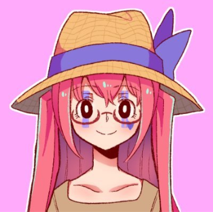
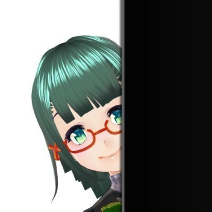
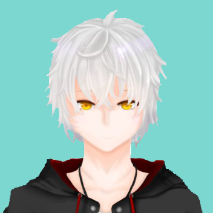
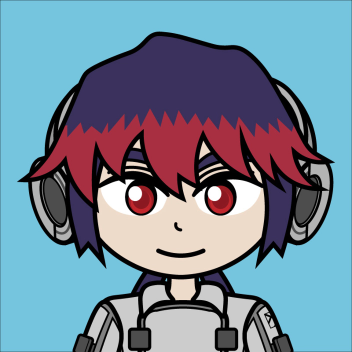
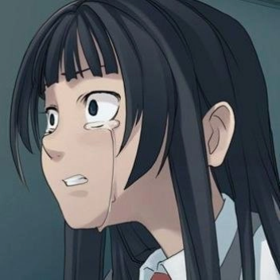
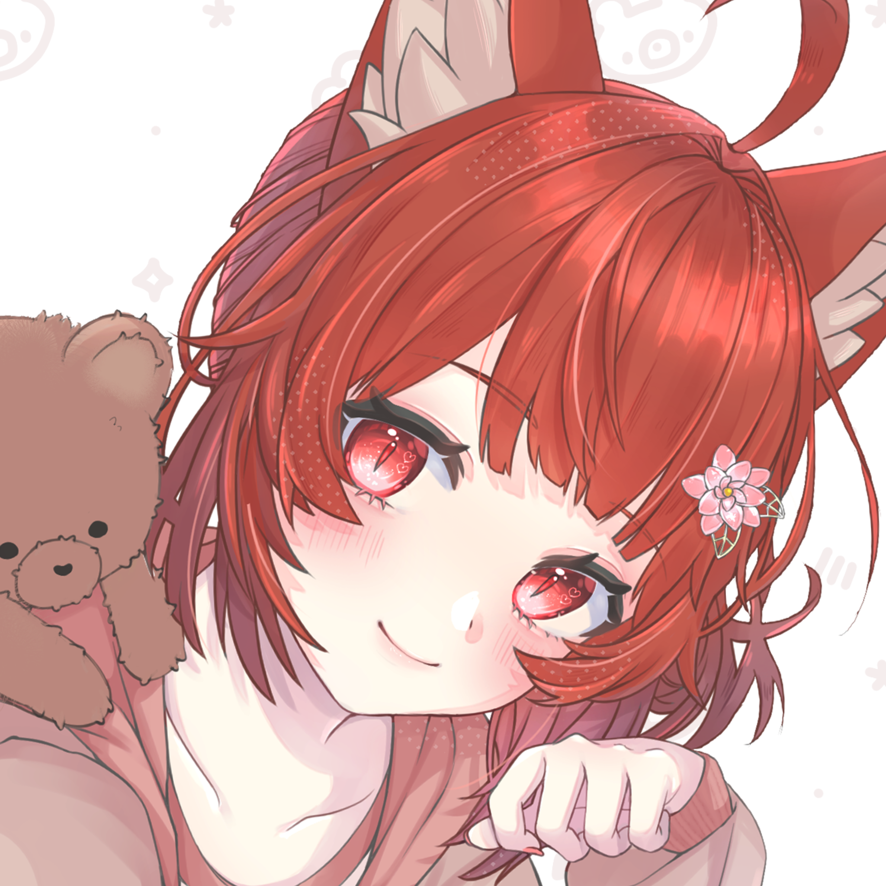
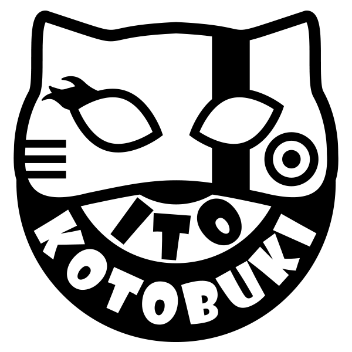
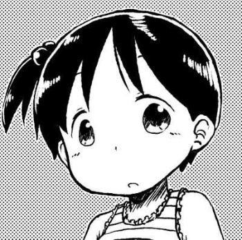

メンバー
編集長
-

ニッソちゃん
本誌の編集長、通称ニッソと申します。メタバースを旅するお供に、本誌『Platform』をお読みいただければ幸いです。
本誌に書かれている、生の「感情」を是非楽しんでほしいなと思います。それでは、どうぞよろしく。
副編集長
-

思惟かね
バーチャルを通して未来をみつめるクリエイターの思惟かねです。『platform』では紙面の編集・デザインを担当、執筆にも参加しています。
その他、noteの執筆や難関バーチャルクイズ大会「オモイカネ杯」主催、CLUSTARS学園講師など多方面で活動中。
-

sun
VR世界の人物やワールドの執筆に特化したメタバース小説家。 私がメタバースで見出した情緒や、喚起された思い出などを、『Platform』の文章に纏めています。
Skeb、小説執筆、出張執筆（リアルタイム小説執筆イベント）の執筆依頼を募集中。詳しくはX(Twitter)のプロフィールまで。
編集
-

燕谷古雅
ソーシャルVRのイベントやワールドなどの紹介・レビューを取り扱ったブログ『ツバメヤロク』の人。
『Platform』では紙面の編集・デザイン担当。ちょちょいのちょいと紙面の雰囲気に合わせます。
ライター
-

わく
海がきこえる生まれ、月刊アフタヌーン育ち。ノスタルジー全般と、それに伴う人間の反応に興味がある。鄙れた旅館巡りが好き。
同人誌の代表作「感傷マゾ vol.01~07」 https:wak.booth.pm
-

ことはしろ
この世界の出来事や人々の思い・願いを数十年後の未来に届けることを目指して「ことはしろの手記」としてnoteに毎日執筆活動している”ことはしろ”だよ〜！
ご縁があって『Platform』のライターとして関わらせて貰うことになったの！私の言葉でみんなにこの世界の魅力を伝えられるように頑張るよ！
カメラマン
-
Tokikaze
フォトグラファー担当。個人でもバーチャルフォトグラファーとして活動中。風景写真が得意分野なので、ワールドの魅力を引き出せるよう多角的視点から写真を撮っていきます。
RKBエンタテ！区にバーチャルフォトグラファーとして出演。日産、モスバーガーなどの企業案件、フォトコン審査員、宣材写真撮影など他分野で活動中。
-

寿一兎
VRで琉球箏曲演奏家やフォトグラファー、ワールド・オブジェクト制作等多岐にわたり活動しています！
『Platform』ではカメラマンとしてライターさんが表現する様々な場所の魅力を伝えるためのお手伝いをしています。頑張ります！
-
rocksuch
VRChatで旅をしながら風景やスナップ写真を中心に様々な写真を撮っています。
最近はVRChatの色んなカメラアセットを試すのがマイブーム。
校正
-

Nag
校正を担当させてもらってます。メンバー各人が語りだそうとした固有のVR体験の、そのザラザラした肌触りや冷めやらぬ熱までも（願わくは、いつか彼方の読者のもとまで）離さず文に乗せられたら、などと夢想しつつ参加しています。